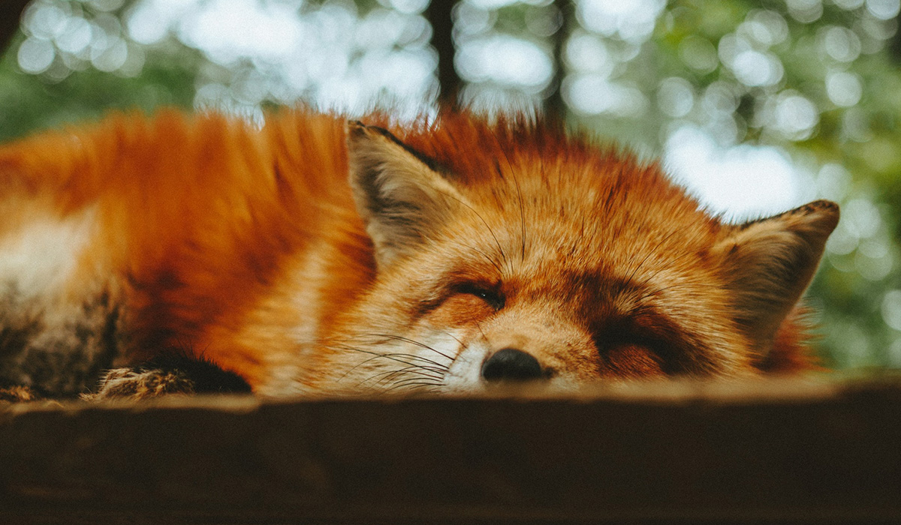

O meio ambiente também afeta os Animais


Raposa
As raposas são animais mamíferos e onívoros pertencentes à família Canidae. São vulpídeos de porte médio, caracterizados por um focinho comprido e uma cauda longa e peluda.
Também apresentam como particularidade suas pupilas ovais, semelhantes às pupilas verticais dos felídeos.
As raposas são animais mamíferos e onívoros pertencentes à família Canidae. São vulpídeos de porte médio, caracterizados por um focinho comprido e uma cauda longa e peluda.
Esquilo
O esquilo é um pequeno mamífero roedor pertencente à família Sciuridae, que inclui cerca de 500 espécies. Eles estão presentes em todos os continentes, com exceção da Austrália e da Antártida.
São animais fortes e resistentes cujo corpo está preparado para sobreviver a mudanças e adversidades climáticas.
Urso
Ursos são mamíferos da família dos Ursídeos e da ordem dos Carnívoros. Tem como principais características o corpo pesado e os músculos fortes.
Esses músculos tornam possível que esses animais fiquem em pé sobre duas patas. Aliás, seus pés posteriores têm cinco dedos.
Lobo
Os dentes dos lobos podem triturar os ossos de suas presas, além disso, eles contam com um aguçado faro e uma ótima visão noturna.
Os lobos são animais carnívoros, por isso, preferem habitar locais onde a caça seja possibilitada.
Eles estão no topo da cadeia alimentar dentro dos ecossistemas que fazem parte.
Macaco
Os macacos são mamíferos que fazem parte de um grupo de cerca de 250 espécies chamadas primatas.
A grande maioria dessa espécie vive em países com alta temperatura, e alimentam-se diariamente com frutas e sementes, sendo sua fruta favorita a banana.
Leão
O leão normalmente vive em bandos para beneficiar a sobrevivencia dele, beneficiar a caça.
O bando é constituido por um macho dominante e suas fêmeas e filhotes. Cada bando em média entre 2 a 40 leões.
É um felino de porte grande chegando a um tamanho médio de 2,5 metros de comprimento,1 metro de altura e até 200kg em peso.
Apresenta pelagem curta de cor acastanhada que pode variar de marrom a escuro. O albinismo acontece em algumas populações.
FAQ
- Preservar os animais não é só uma questão ecológica e cultural.
- A interferência da destruição e extinção prematura de espécies da fauna incide diretamente na vegetação e, por consequência, em todo o bioma, afetando também os rios e cursos d’água e a qualidade do ar, além das populações que estão economicamente ligadas à pesca, à caça ou ao extrativismo.
- Qual a diferença?
- As raposas são animais mamíferos e onívoros pertencentes à família Canidae. São vulpídeos de porte médio, caracterizados por um focinho comprido e uma cauda longa e peluda.
- Como proteger?
- A importância de preservar os animais tem sido cada vez mais discutida na atualidade. Com o aumento da preocupação com o meio ambiente e com os impactos da ação do homem na natureza, os estudos elaborados têm apontado que as consequências das extinções prematuras de espécies, causadas pelo homem, incidem diretamente sobre seus habitats e também sobre a qualidade de vida das populações.


- 


Números
Contato
- contato@aps-animais.com
- +55 (13) 0102-0304
- Rua Doutor João Sampaio, nº 469
- Praia Grande - SP
- Doe 0 bitcoin para nos ajudar hehe
- Seg à Sex das 8 às 18